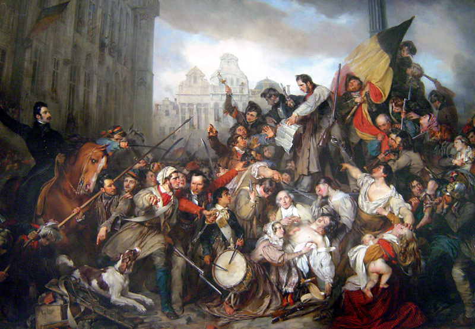

Retour à
l'index
Indépendance
de la Belgique
Le
Congrès de Vienne de 1815 avait joint la Belgique à
la Hollande, de Guillaume I d'Orange établissant le royaume des
Pays Bas.
Les mouvements d'insurrection
indépendantiste belges soutenaient
les différences linguistiques et religieuses entre Belges
et
Hollandais. La révolution de Bruxelles a été
très
rapide et violente: en octobre 1830 Guillaume I a été
chassé et l'indépendance de la Belgique a
été proclamée et reconnue par le traité de
Londres de 1831. Elle est encore aujourd'hui une monarchie
fédérale
constitutionnelle.
